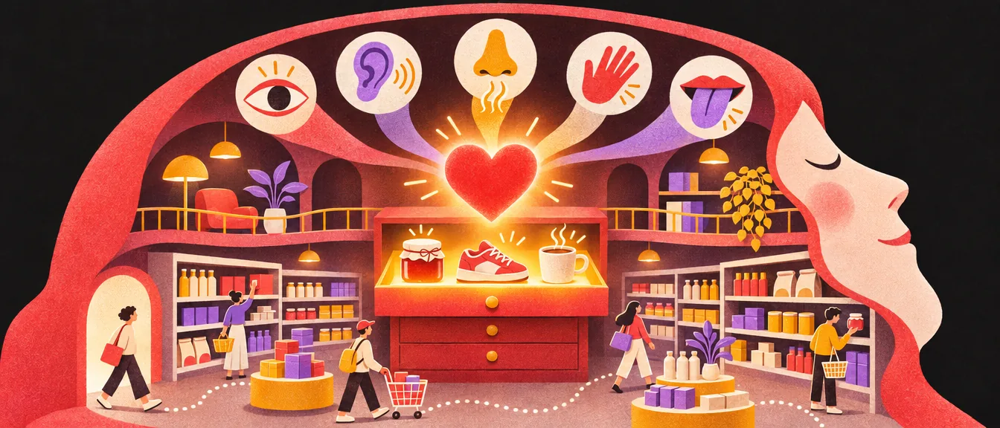
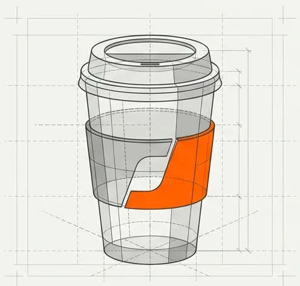
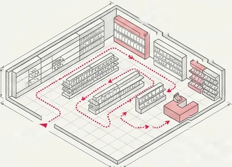
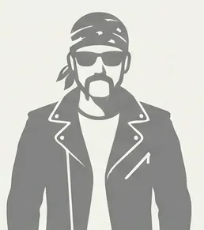
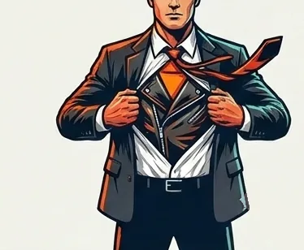
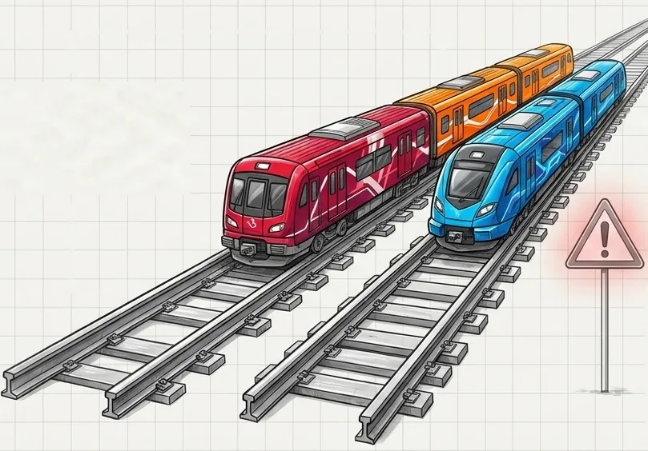
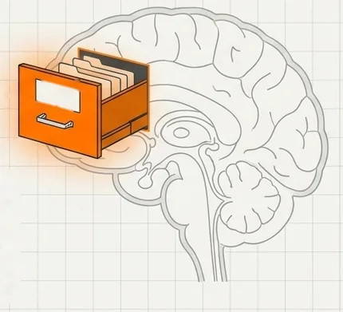
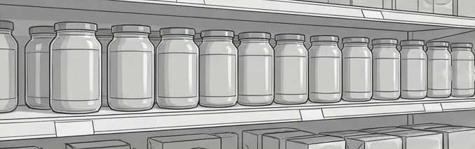
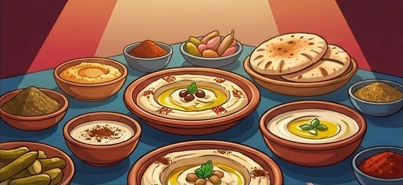

איך מותגים גדולים נבנים
לפני שמעצבים לוגו, כדאי להבין מה בעצם קורה בראש של מי שקונה. רוב ההחלטות שלנו רגשיות, ומותגים גדולים לא נשענים על לוגו יפה. הם בונים רעיון אחד, מתרגמים אותו לכל החושים, ושומרים עליו בעקביות עד שהם תופסים מגירה קבועה בזיכרון.

קנבס המותג
הפרק הזה מבוסס על ההרצאה של דוד אביטבול, „קנבס המותג: מהכוח הנסתר של הרגש ועד לשליטה במדף”, מ־16.09.2026.
השאלה שבמרכז ההרצאה פשוטה: למה אנשים משלמים פי שניים על כוס קפה כמעט זהה? התשובה לא נמצאת בכוס, אלא בכל מה שסביבה: החוויה, הסיפור, הצבע, הריח, והמקום שהמותג כבר תפס לנו בראש.

אם עוד לא קראתם את הפרק הראשון, שם יש את ההגדרה הבסיסית: מיתוג הוא שפה עיצובית שלמה, לא רק לוגו. כאן יורדים שכבה אחת עמוק יותר, אל הפסיכולוגיה שמתחת. מה זה בעצם מיתוג
הכוח המניע: 95% מהחלטות הקנייה רגשיות
לפי ההרצאה, 95% מהחלטות הקנייה מתקבלות במוח הרגשי, ורק 5% במוח הרציונלי. ההיגיון לא מחליט. הוא רק מצדיק בדיעבד בחירה שהרגש כבר עשה.
למה החלב תמיד בסוף הסופר?
זה לא מקרי. מסלול הקנייה בסופרמרקט מתוכנן מראש כדי להתיש את הצד הרציונלי ולעודד קניות דחף. לחצו על השלבים ועקבו אחרי הקו האדום:

הכניסה. נכנסים מפינה אחת של החנות, ולא מהאמצע. מהרגע הזה המסלול כבר מוביל אתכם.
המעברים. הקו מתפתל בין המדפים. כל מעבר הוא עוד חשיפה, ועוד החלטה קטנה שהרגש מקבל לבד.
החלב בסוף. המוצר שכמעט כולם באו בשבילו עומד בפינה האחורית, כדי שתעברו את כל החנות בדרך אליו.
הקופה. בסוף הדרך, עייפים, מחכים בתור ליד חטיפים וקניות דחף. לפי ההרצאה, בערך 20% מהעגלה הם קניות שלא תוכננו מראש.
האשליה: לוגו אינו מותג. מוצר אינו מותג.
אפשר לעצב לוגו מושלם ועדיין לא להחזיק מותג. מוצר הוא מה שהלקוח מקבל ביד. מותג הוא מה שהוא מרגיש כשהוא מקבל אותו, ומה שהוא מספר אחר כך לאחרים.
לחצו על כרטיס כדי להפוך אותו: מאותו מוצר, למותג.
„המותג שלך הוא מה שאנשים אומרים עליך כשאתה לא בחדר.”
ג'ף בזוס
הלוגו הוא נכס אחד מתוך רבים. חשוב, אבל לא לבד. לוגו
המנוע: הרעיון המארגן (The Organizing Idea)
הרעיון המארגן הוא ה־DNA של החברה: רעיון אחד, חד, שממנו נגזרות כל ההחלטות. לא רק העיצוב, אלא גם האריזה, השירות, המחיר, הקמפיינים וחוויית הקנייה. כשהרעיון ברור, אף אחד בחברה לא צריך לנחש איך „אנחנו” מתנהגים.
המארגןה־DNA של החברה
אריזה
הרגע הראשון שבו המוצר נוגע ביד.
קופסה לבנה, נקייה ומינימליסטית, שנפתחת לאט, כמעט כמו טקס. פשטות ושבירת מוסכמות, גם בקרטון.
בהרצאה לא הובאה דוגמה לאריזה. נסו בעצמכם: איך תיראה שקית של מכולת שחיה את הלילה התל־אביבי?
שירות לקוחות
מה קורה כשמשהו לא עובד, או כשפשוט צריך עזרה.
ה־Genius Bar: עמדת תמיכה בתוך החנות, עם אנשים מולכם במקום מוקד טלפוני.
ליברליות, ושעות פתיחה 24/7. העיר לא ישנה, אז גם המכולת לא.
תמחור
גם המחיר מספר סיפור על המותג.
מחיר פרימיום, כמעט בלי מבצעים. המחיר עצמו אומר „זה לא עוד מחשב”.
בהרצאה לא הובאה דוגמה לתמחור. שאלה למחשבה: האם מכולת כזו צריכה להיות הזולה בשכונה, או דווקא לא?
קמפיינים
מה המותג אומר, ומה הוא עושה כדי שידברו עליו.
שבירת הסטטוס קוו: Think Different. זה גם היה שמו של קמפיין אמיתי של Apple, מ־1997.
מהלכים שנולדים מהקהל: מטריות בחורף, ואפילו מטריות לכלבים.
חוויית קנייה
איך מרגישים בתוך החנות, או בתוך האתר.
עיצוב החנויות. מרחב פתוח, שולחנות ארוכים, ומוצרים שמותר לגעת בהם ולנסות.
סלי קנייה קטנים, כי קונים מעט ובדרך. ובקיץ, הזמנה להיכנס להתקרר במזגן.
שבירת הסטטוס קוו (Think Different)
הרעיון מתבטא בעיצוב החנויות, בהיעדר מקלדת פיזית (באייפון הראשון), ובהכנסת צבע לעולם של מחשבים אפורים.
סגנון החיים התל־אביבי
ליברליות, פתוח 24/7, סלי קנייה קטנים, מטריות בחורף, מטריות לכלבים, והזמנה להיכנס למזגן בקיץ. הכול נגזר מתוך תובנה עמוקה על הקהל.
הרעיון המארגן הוא גם מה שמבדיל אתכם מהמתחרים, ומה שנותן למותג אישיות. מחקר מתחרים 12 הארכיטיפים
הסוף לדמוגרפיה: פילוח קונספטואלי
אנחנו לא מטרגטים גיל, מיקוד או הכנסה. אנחנו מטרגטים תפיסת עולם.
ההבדל נשמע קטן, אבל הוא משנה הכול. הדוגמה המוכרת היא הארלי־דייווידסון: מי שמדמיין את הקהל שלה רואה אופנוען עם בנדנה, אבל הקונים בפועל הם אנשים אחרים לגמרי.


הן לא פונות „לבני 20 בגוש דן”. הן פונות, באופן קונספטואלי, למאמצי חדשנות (Early Adopters), לאוהבי מוזיקה אדוקים, או לאנשים שמחפשים בריחה (אסקפיזם) בסביבה רועשת. שלושה אנשים שאולי לא חולקים שום נתון דמוגרפי, אבל חולקים צורך.
איך מגדירים קהל יעד בתוך פרויקט מיתוג: למי המותג פונה
אדריכלות חושית: לעקוף את המוח המודע
ככל שהמותג מנכס לעצמו יותר נכסים בחושים שונים, כך הוא מקודד עמוק יותר בתת־מודע. מותג שרק „נראה” מסוים, תופס חוש אחד. מותג שגם נשמע, מריח ומרגיש ביד, תופס חמישה.
ראייה
הצבע האדום וצורת הבקבוק הרשומה של קוקה־קולה. או הלוגו של צ'ופה צ'ופס, שעיצב סלבדור דאלי, האיש עם השפם המפורסם.
שמיעה
ה„טא־דום” בפתיחה של נטפליקס, או הג׳ינגל בן חמשת הצלילים של Intel Inside. צליל קצר שמייצר ציפייה, כמו ממתק קטן למוח.
ריח
חתימת הריח בחנויות Laline, ריח „הרכב החדש” של לקסוס, או הרגע שבו פותחים את מרכך הכביסה סוד באמצע הסופר.
מישוש
הקימורים של בקבוק הזכוכית ההיסטורי של קוקה־קולה, או המרקם של שקית Golden Ring, שנותן תחושת פרימיום עוד לפני שפותחים אותה.
טעם
הצביטה הספציפית בגרון בלגימה הראשונה של קוקה־קולה. אפשר לזהות אותה בעיניים עצומות.
הצבע הוא בדרך כלל הנכס החושי הראשון שמעצבים בונים. פסיכולוגיה של צבעים
חוק הברזל: עקביות רדיקלית פוגשת חדשנות

המסילה = זהות המותג
הצבע, הקול והערכים. המסילה לעולם לא משתנה.
הקרונות = חדשנות
מוצרים וקמפיינים. הקרונות מתחלפים כל הזמן, והם מה שמשאיר את המותג חי.
שוקולד פרה של עלית הוא דוגמה מושלמת: הצבע האדום והפרה הם המסילה, והם נשארים. סוכריות קופצות וטעמים חדשים הם הקרונות, והם מתחלפים כל הזמן.
ב־1985 קוקה־קולה שינתה את הנוסחה וקראה למשקה החדש New Coke. היא שברה את המסילה. הקהל זעם: מאות אלפי שיחות ומכתבים של לקוחות כועסים, והחברה נאלצה לחזור במהירות לנוסחה הישנה, תחת השם Coca-Cola Classic, אחרי 79 ימים בלבד.
אל תשתעממו מהמותג שלכם לפני שהלקוחות משתעממים ממנו. מה שנראה לכם „ישן” אחרי שנה, הלקוחות רק התחילו לזהות.
נדל״ן מנטלי: Top of Mind
שאלו מישהו „איזה חומוס אתה מכיר?”. הוא לא יפרט את כל מדף הסופר. הוא ישלוף את המגירה העליונה: אחלה, צבר, אבו גוש. שלושה שמות, אולי ארבעה, וזהו.

לבנות נכסים שהם אך ורק שלכם, כמו הכיס הקטן ההיסטורי בג'ינס של ליווייס, כדי להבטיח את המקום שלכם במגירה.
ליווייס הלכה עם זה עד הסוף: גם התפר המקושת על הכיס האחורי וגם התווית האדומה הקטנה (Red Tab) רשומים אצלה כסימני מסחר. אף אחד אחר לא יכול להשתמש בהם.
כדי להיכנס לשלישייה, צריך קודם כל להיות שונים מכל מי שכבר שם. מחקר מתחרים
מקרה מבחן: פיצוח קטגוריית הטחינה (בארכה)
כל מה שראינו עד עכשיו, במקרה אחד אמיתי. עקבו אחרי הציר: מנקודת הפתיחה ועד התוצאה.
נקודת הפתיחה
משפחה מהכפר עארה שייצרה טחינה לשוק הירדני, עם לוגו מיושן.
המטרה
לכבוש את המדף הישראלי, מדף תחרותי שבו כל האריזות נראו אותו דבר: צנצנות עם דפנות ישרות, שנתפסו כאשכנזיות או כתעשייתיות.

התובנה
מחקר עומק העלה שאנשים אוהבים לאכול טחינה דווקא במסעדות ערביות, כי שם היא נתפסת כ„דבר האמיתי”.

הרעיון המארגן
טחינה ערבית אסלית (אותנטית, מקורית).
מכאן והלאה, כל החלטה נגזרת מהמשפט הזה.
השם: זהות
השם בארכה (ברכה, בערבית): מילה שמתגלגלת נכון על הלשון, גם בעברית וגם בערבית.
הלוגו: ראייה
טיפוגרפיה שמזכירה כתב ערבי, ואייקון שנלקח מתוך פסיפסים ערביים מסורתיים.
הצורה: מישוש וראייה
הדפנות הישרות הוחלפו בצורה מעוגלת של כד חרס ערבי היסטורי. התוצאה בולטת בצורה חריגה על המדף, ומרגישה אחרת ביד. לחצו על השלבים:
כמו כולם
צנצנת עם דפנות ישרות. על מדף של עשרות צנצנות זהות, היא פשוט נבלעת.
כד חרס
צורה מעוגלת של כד חרס ערבי היסטורי. היא בולטת על המדף (ראייה) ומרגישה אחרת ביד (מישוש). שני חושים, צורה אחת.
השם והלוגו
השם בארכה, באותיות שמזכירות כתב ערבי, ואייקון בהשראת פסיפס מסורתי. עכשיו האריזה עצמה אומרת „טחינה ערבית אסלית”.
השפה התקשורתית
סרטוני קמפיין שבהם הצנצנת נכנסת לפריים בתנועה של ריקודי בטן, עם קריינות עמוקה של השחקן אורי גבריאל. גם כאן: חוש השמיעה, והרעיון המארגן, בכל שנייה.
התוצאה
נוסחת הצמיחה: ממוצר לאימפריה מנטלית
כל חלק בנוסחה הוא קישור לקטע שלו בפרק.
בניית מותג היא לא עיצוב לוגו. היא הנדסה פסיכולוגית של חוויה שחוזרת על עצמה במדויק, בכל נקודת מגע, עד שהיא הופכת לטבע שני של הלקוח.
אתגר החדשנות: המעבדה שלכם
שני תרגילים מסוף ההרצאה. מתאימים לבד, לזוגות, או לשיעור שלם.
פירוק
- בחרו מותג אייקוני אחד: Lego, Apple, טסלה, Nike או Spotify.
- המשימה: פרקו אותו לגורמים, ומפו איך הוא בא לידי ביטוי בכל חמשת החושים.
- אילו נכסים הם שלו בלבד?
המצאה
- המציאו מוצר פיזי ביזארי וחסר היגיון. למשל: מגפי חורף בלי החלק העליון.
- המשימה: בנו סביבו מותג שלם, והגדירו איך הלקוח יפגוש אותו דרך כל אחד מחמשת החושים.
- ומי הקהל הקונספטואלי (ולא הדמוגרפי) שיאמץ אותו?
רוצים לעבור מהפסיכולוגיה לעבודה עצמה? הפרק הבא מתחיל מהשאלות שעונים עליהן לפני שפותחים תוכנה. אסטרטגיה, קול ומתחרים